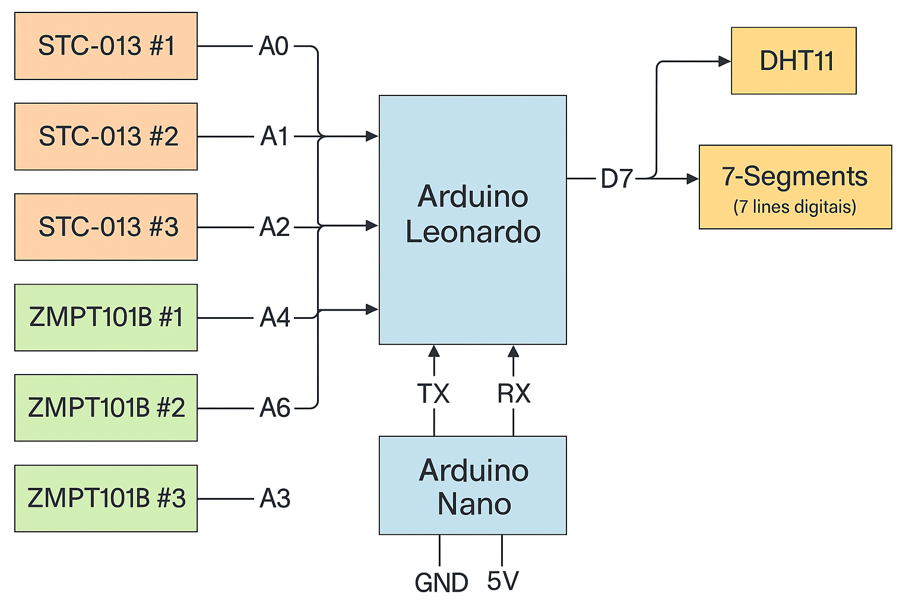
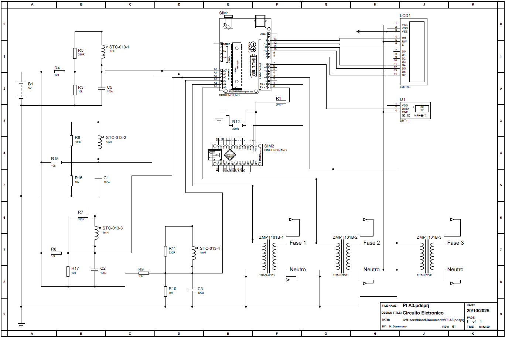

O objetivo do projeto é desenvolver um dispositivo inteligente para coleta de
dados de tensão,corrente, temperatura em painéis elétricos de baixa tensão,
atendendo tanto o setor
industrial (padrão de entrada até 100 A, 380 V) quanto o setor
comercial. O projeto inclui a criação de
uma infraestrutura em nuvem para o armazenamento seguro dos dados coletados e
informações sobre
clientes e equipamentos.
Além disso, será desenvolvido um sistema de processamento de dados que irá gerar
parâmetros
elétricos a partir das variáveis coletadas. A implementação de agentes de Inteligência
Artificial (IA) será realizada para análise dos parâmetros
e identificação de ruídos e distorções na rede elétrica. Também será
desenvolvido um sistema
para geração de relatórios personalizados por cliente, com base nas análises de
IA e dados
coletados pelo dispositivo
Dispositivo
Um dispositivo físico funcional, montado em uma maleta de proteção, capaz de medir as variáveis
elétricas e transmiti-las para a nuvem.
Hardware
Arduino
Arduino
O hardware do dispositivo é baseado na plataforma Arduino, escolhida por sua
acessibilidade, facilidade de uso e ampla comunidade de suporte. A seleção dos componentes
eletrônicos será feita com base nos requisitos de medição de tensão, corrente e temperatura,
garantindo precisão e confiabilidade nas leituras.
O design do circuito incluirá sensores adequados para cada variável elétrica, além de um
microcontrolador capaz de processar os dados coletados e gerenciar a comunicação com a
infraestrutura em nuvem. A alimentação do dispositivo foi projetada para garantir operação
contínua e segura em ambientes industriais e comerciais.
Arduino Leonardo
O Arduino Leonardo é uma placa de microcontrolador baseada no ATmega32u4. Ele se destaca por
sua capacidade de emular dispositivos USB, como teclados e mouses, permitindo uma
interação mais rica com o computador. Essa funcionalidade é especialmente útil em
projetos de automação e controle.
A placa possui 20 pinos digitais, dos quais 7 podem ser usados como saídas PWM, e 12
entradas analógicas. Além disso, o Arduino Leonardo conta com uma interface USB integrada,
facilitando a programação e a comunicação com o computador.
Arduino LeonardoESP32
ESP32
O ESP32 é um microcontrolador de baixo custo com conectividade Wi-Fi e Bluetooth integrada,
ideal para aplicações de Internet das Coisas (IoT). Ele possui um processador dual-core,
permitindo o processamento simultâneo de múltiplas tarefas.
O ESP32 é amplamente utilizado em projetos de automação residencial, monitoramento remoto
e dispositivos vestíveis. Sua versatilidade e potência o tornam uma escolha popular entre
os desenvolvedores.
SCT-013
O SCT-013 é um sensor de corrente que permite a medição de corrente elétrica em condutores
sem a necessidade de interrupção do circuito. Ele é amplamente utilizado em aplicações de
monitoramento de energia e eficiência energética.
O sensor funciona com base no princípio da indução eletromagnética, onde uma bobina é
enrolada ao redor de um núcleo de ferrite. Quando a corrente elétrica passa pelo condutor,
ela gera um campo magnético que induz uma corrente na bobina do sensor. Essa corrente
induzida é proporcional à corrente que está sendo medida no
condutor.
SCT-013ZMPT101B
ZMPT101B
O ZMPT101B é um módulo de sensor de tensão que permite a medição de tensão elétrica em
circuitos. Ele é amplamente utilizado em aplicações de monitoramento de energia e
automação residencial.
O módulo utiliza um transformador de tensão para reduzir a tensão da rede elétrica a um
nível seguro para medição. A saída do módulo é uma tensão analógica que é proporcional à
tensão de entrada, permitindo que microcontroladores e outros dispositivos leiam os
valores de tensão de forma precisa.
DHT11
O DHT11 é um sensor de temperatura e umidade que permite a medição de condições ambientais em
tempo real. Ele é amplamente utilizado em aplicações de automação residencial e
monitoramento
ambiental.O sensor utiliza um elemento capacitivo para medir a umidade e um termistor para
medir a
temperatura. A saída do DHT11 é digital e pode ser facilmente lida por microcontroladores e
outros dispositivos.
DHT11Displays de cristal líquido (LCD)
Displays de cristal líquido (LCD)
Os displays de cristal líquido (LCD) são dispositivos eletrônicos utilizados para exibir
informações
visuais. Eles são amplamente utilizados em uma variedade de aplicações, incluindo painéis de
controle,
dispositivos portáteis e eletrodomésticos.
Os displays LCD funcionam com base na manipulação da luz através de camadas de cristal
líquido,
permitindo a exibição de texto e imagens com baixo consumo de energia.
Diagrama elétrico
O diagrama simplificado do hardware ilustra a disposição dos componentes principais do
sistema,
incluindo o microcontrolador, os sensores e os módulos de comunicação. Este diagrama é
essencial
para entender a arquitetura do sistema e como os diferentes componentes interagem entre si.
Ele serve como um guia para a implementação do hardware e pode ser utilizado para
identificar
possíveis melhorias ou otimizações no design.

Diagrama simplificado do hardware
O diagrama completo pode ser verificado abaixo:

Diagrama completo do hardware
Firmware
O firmware é um tipo de software que é gravado em um dispositivo de hardware, como um
microcontrolador,
para controlar suas funções e operações. No contexto do dispositivo de coleta de dados elétricos,
o firmware é responsável por gerenciar a leitura dos sensores, o processamento dos dados coletados e
a
comunicação com a infraestrutura em nuvem.
C++
C++
A linguagem de programação C++ é amplamente utilizada no desenvolvimento de firmware para
dispositivos embarcados, como o Arduino. Ela oferece uma combinação de eficiência, controle
de
baixo nível e recursos de programação orientada a objetos, tornando-a ideal para a criação
de
software que interage diretamente com o hardware.
No desenvolvimento do firmware para o dispositivo de coleta de dados elétricos, o C++ será
utilizado para implementar as funcionalidades necessárias, incluindo a leitura dos sensores,
o processamento dos dados e a comunicação com a infraestrutura em nuvem. A linguagem permite
otimizar o desempenho do firmware, garantindo que ele funcione de maneira eficiente mesmo em
ambientes com recursos limitados.
Snippet de codigo C++
// Piscar o LED embutido (blink)
// A função setup() roda uma vez quando o Arduino é ligado ou resetado
void setup() {
pinMode(LED_BUILTIN, OUTPUT); // Configura o pino do LED como saída
}
// A função loop() roda repetidamente para sempre
void loop() {
digitalWrite(LED_BUILTIN, HIGH); // Liga o LED
delay(1000); // Espera 1 segundo
digitalWrite(LED_BUILTIN, LOW); // Desliga o LED
delay(1000); // Espera 1 segundo
}
WiFi.h
A biblioteca WiFi.h é uma parte fundamental do desenvolvimento de firmware para dispositivos
embarcados que precisam se conectar a redes Wi-Fi. Ela fornece uma interface simples e
eficiente para gerenciar conexões Wi-Fi, permitindo que os desenvolvedores se concentrem na
lógica de aplicação em vez de se preocupar com os detalhes da comunicação de rede.
No contexto do dispositivo de coleta de dados elétricos, a biblioteca WiFi.h será utilizada
para estabelecer a conexão com a infraestrutura em nuvem, permitindo a transmissão dos dados
coletados pelos sensores. A biblioteca oferece recursos como escaneamento de redes
disponíveis,
conexão a redes Wi-Fi, gerenciamento de credenciais e comunicação via protocolos como HTTP e
MQTT.
Com a WiFi.h, o firmware poderá enviar dados em tempo real para a nuvem, possibilitando o
monitoramento e controle remoto do dispositivo.
WiFi.h
Snippet de codigo C++ com WiFi.h
#include < WiFi.h > // Biblioteca para controle de WiFi (use < ESP8266WiFi.h > se for ESP8266)
// Defina suas credenciais WiFi
const char* ssid = "NOME_DA_REDE";
const char* password = "SENHA_DA_REDE";
void setup() {
Serial.begin(115200); // Inicia a comunicação serial
delay(1000);
Serial.println();
Serial.print("Conectando-se à rede WiFi: ");
Serial.println(ssid);
WiFi.begin(ssid, password); // Tenta conectar ao WiFi
// Aguarda conexão
while (WiFi.status() != WL_CONNECTED) {
delay(500);
Serial.print(".");
}
Serial.println("");
Serial.println("✅ Conectado ao WiFi!");
Serial.print("Endereço IP: ");
Serial.println(WiFi.localIP());
}
void loop() {
// Exemplo simples: mostra a intensidade do sinal a cada 5 segundos
Serial.print("Sinal RSSI: ");
Serial.print(WiFi.RSSI());
Serial.println(" dBm");
delay(5000);
}
HTTPClient.h
HTTPClient.h
A biblioteca HTTPClient.h é usada no firmware para dispositivos
embarcados que precisam realizar requisições HTTP. Ela fornece uma
interface simples e eficiente para gerenciar conexões HTTP, permitindo que os
desenvolvedores
se concentrem na lógica de aplicação em vez de se preocupar com os detalhes da comunicação
de
rede.
No contexto do dispositivo de coleta de dados elétricos, a biblioteca HTTPClient.h será
utilizada para enviar os dados coletados pelos sensores para a infraestrutura em nuvem,
permitindo a transmissão dos dados de forma segura e eficiente. A biblioteca oferece
recursos
como suporte a métodos HTTP (GET, POST, PUT, DELETE), gerenciamento de cabeçalhos e
autenticação.
Com a HTTPClient.h, o firmware poderá enviar dados em tempo real para a nuvem,
possibilitando
o monitoramento e controle remoto do dispositivo.
Snippet de codigo C++ com HTTPClient.h
#include < HTTPClient.h >
void setup() {
Serial.begin(115200);
delay(1000);
// ⚠️ Aqui assumimos que o WiFi já está conectado!
HTTPClient http;
// URL de exemplo
String url = "http://worldtimeapi.org/api/timezone/America/Sao_Paulo";
Serial.println("Enviando requisição GET...");
http.begin(url); // Inicia o cliente HTTP com a URL
int httpCode = http.GET(); // Executa a requisição GET
if (httpCode > 0) {
Serial.printf("Código de resposta: %d\n", httpCode);
String payload = http.getString(); // Lê o corpo da resposta
Serial.println("Conteúdo recebido:");
Serial.println(payload);
} else {
Serial.printf("Erro na requisição: %s\n", http.errorToString(httpCode).c_str());
}
http.end(); // Encerra a sessão HTTP
}
void loop() {
// Nada aqui — exemplo executado apenas uma vez
}
ArduinoJson.h
A biblioteca ArduinoJson.h é usada no firmware para dispositivos
embarcados que precisam manipular dados JSON de forma eficiente.
Ela fornece uma interface simples e eficiente para trabalhar com dados JSON.
A biblioteca ArduinoJson.h será utilizada para formatar os dados coletados pelos sensores em
um formato JSON adequado antes de
enviá-los para a infraestrutura em nuvem. Isso garantirá que os dados sejam transmitidos de
forma
estruturada e fácil de interpretar.
ArduinoJson.h
Snippet de codigo C++ com ArduinoJson.h
#include < ArduinoJson.h >
void setup() {
Serial.begin(115200);
delay(1000);
// ==== CRIANDO UM OBJETO JSON ====
StaticJsonDocument<200> doc; // Aloca 200 bytes de memória (estática)
// Adiciona dados ao JSON
doc["nome"] = "Arduino";
doc["versao"] = 1.0;
doc["wifi_conectado"] = true;
// Cria um array dentro do objeto
JsonArray sensores = doc.createNestedArray("sensores");
sensores.add("temperatura");
sensores.add("umidade");
sensores.add("luz");
// Serializa (converte para texto JSON) e envia via Serial
Serial.println("JSON gerado:");
serializeJsonPretty(doc, Serial);
Serial.println();
// ==== DESSERIALIZANDO UM JSON (texto -> objeto) ====
const char* jsonEntrada = "{\"status\":\"ok\",\"codigo\":200,\"mensagem\":\"Tudo certo!\"}";
StaticJsonDocument<200> doc2;
DeserializationError erro = deserializeJson(doc2, jsonEntrada);
if (!erro) {
const char* status = doc2["status"];
int codigo = doc2["codigo"];
const char* mensagem = doc2["mensagem"];
Serial.println("\nJSON lido com sucesso:");
Serial.printf("Status: %s\n", status);
Serial.printf("Código: %d\n", codigo);
Serial.printf("Mensagem: %s\n", mensagem);
} else {
Serial.print("Erro ao ler JSON: ");
Serial.println(erro.c_str());
}
}
void loop() {
// Nada aqui — o exemplo roda uma vez no setup()
}
EmonLib.h
EmonLib.h
A biblioteca EmonLib.h é usada no firmware para dispositivos
embarcados que precisam medir e monitorar o consumo de energia elétrica.
Ela fornece uma interface simples e eficiente para trabalhar com medições de corrente e
tensão.
A biblioteca EmonLib.h será utilizada para processar os dados coletados pelos sensores de
energia,
permitindo que o firmware calcule o consumo de energia em tempo real e envie essas
informações para a nuvem.
Snippet de codigo C++ com EmonLib.h
#include < EmonLib.h >
EnergyMonitor emon1; // Cria uma instância do monitor de energia
void setup() {
Serial.begin(9600);
// Configura o sensor de corrente:
// Parâmetros: pino analógico e fator de calibração
emon1.current(A0, 60.6);
// -> A0: pino onde o SCT-013 está ligado
// -> 60.6: fator de calibração (depende do modelo do sensor e circuito)
}
void loop() {
double Irms = emon1.calcIrms(1480); // Calcula a corrente RMS (1480 amostras)
double potencia = Irms * 230.0; // Calcula potência aparente (P = V * I)
Serial.print("Corrente: ");
Serial.print(Irms);
Serial.println(" A");
Serial.print("Potencia: ");
Serial.print(potencia);
Serial.println(" W");
delay(1000);
}
DHT.h
A biblioteca DHT.h é usada no firmware para dispositivos
embarcados que precisam medir a temperatura e a umidade do ambiente.
Ela fornece uma interface simples e eficiente para trabalhar com sensores DHT11 e DHT22.
A biblioteca DHT.h será utilizada para coletar dados de temperatura e umidade,
permitindo que o firmware envie essas informações para a nuvem.
DHT.h
Snippet de codigo C++ com DHT.h
#include < DHT.h >
#define DHTPIN 2 // Pino digital conectado ao sensor
#define DHTTYPE DHT11 // ou DHT22, dependendo do modelo
DHT dht(DHTPIN, DHTTYPE); // Cria o objeto do sensor
void setup() {
Serial.begin(9600);
dht.begin(); // Inicializa o sensor
Serial.println("Iniciando leitura do sensor DHT...");
}
void loop() {
delay(2000); // Aguarda 2 segundos entre as medições
float umidade = dht.readHumidity(); // Lê a umidade (%)
float temperatura = dht.readTemperature(); // Lê a temperatura (°C)
// Verifica se as leituras são válidas
if (isnan(umidade) || isnan(temperatura)) {
Serial.println("Falha na leitura do sensor DHT!");
return;
}
Serial.print("Umidade: ");
Serial.print(umidade);
Serial.print(" %\t");
Serial.print("Temperatura: ");
Serial.print(temperatura);
Serial.println(" °C");
}
Firewall do Arduino Leonardo
O código realiza a leitura de dados elétricos e ambientais, organiza essas informações em
formato JSON e as envia pela porta serial para outro dispositivo, como um ESP32. Ele utiliza
sensores de corrente SCT para medir as correntes das três fases e do neutro, sensores
analógicos para estimar as tensões RMS e um sensor DHT11 para captar temperatura e umidade.
No início, as bibliotecas EmonLib, ArduinoJson e DHT são importadas, e são definidos os
pinos e fatores de calibração para converter as leituras do ADC em valores reais. Na função
setup(), o sistema inicializa a comunicação serial, configura os sensores de corrente e
inicia o DHT11.
Durante a execução contínua na função loop(), o programa mede as correntes eficazes usando a
EmonLib, calcula as tensões RMS com uma função própria e obtém temperatura e umidade do
DHT11. Em seguida, cria um objeto JSON contendo todas as medições — tensões, correntes,
temperatura e umidade — e o envia de forma compacta pela Serial1, além de imprimir o mesmo
conteúdo na Serial para depuração.
Assim, o código funciona como um monitor trifásico que coleta dados elétricos e ambientais e
os transmite periodicamente, permitindo integração fácil com sistemas de automação ou
plataformas IoT.
#include < EmonLib.h >
#include < ArduinoJson.h >
#include "DHT.h"
#define NUM_FASES 3
EnergyMonitor sct[4];
const int pinSCT0 = A0;
const int pinSCT1 = A1;
const int pinSCT2 = A2;
const int pinSCTN = A3;
const int pinCorrente1 = A4;
const int pinCorrente2 = A5;
const int pinCorrente3 = A6;
const int pinDHT = 7;
#define DHTTYPE DHT11
DHT dht(pinDHT, DHTTYPE);
float fatorCorrente = 6.0606;
float fatorTensao = 230.0 / 512.0;
void setup() {
Serial.begin(9600);
sct[0].current(pinSCT0, fatorCorrente);
sct[1].current(pinSCT1, fatorCorrente);
sct[2].current(pinSCT2, fatorCorrente);
sct[3].current(pinSCTN, fatorCorrente);
dht.begin();
}
double lerTensaoRMS(int pino) {
const int N = 200;
long soma = 0;
for (int i = 0; i < N; i++) soma += analogRead(pino);
double media = soma / (double)N;
double somaQuad = 0;
for (int i = 0; i < N; i++) {
double v = analogRead(pino) - media;
somaQuad += v * v;
}
double rmsADC = sqrt(somaQuad / N);
double volts = rmsADC * (5.0 / 1023.0) * (fatorTensao * 2.0);
return volts;
}
void loop() {
double I1 = sct[0].calcIrms(1480);
double I2 = sct[1].calcIrms(1480);
double I3 = sct[2].calcIrms(1480);
double IN = sct[3].calcIrms(1480);
double V1 = lerTensaoRMS(pinCorrente1);
double V2 = lerTensaoRMS(pinCorrente2);
double V3 = lerTensaoRMS(pinCorrente3);
float U1 = dht.readHumidity();
float T1 = dht.readTemperature();
// Criação do objeto JSON com ArduinoJson
StaticJsonDocument<512> doc;
doc["fase1"] = V1;
doc["fase2"] = V2;
doc["fase3"] = V3;
doc["corrente1"] = I1;
doc["corrente2"] = I2;
doc["corrente3"] = I3;
doc["correnteNeutro"] = IN;
doc["umidade"] = U1;
doc["temperatura"] = T1;
// 🔹 Serializa JSON em UMA LINHA e envia para ESP32
serializeJson(doc, Serial1); // JSON compacto, tudo em uma linha
Serial1.println(); // finaliza linha
// 🔹 Debug via USB (também em linha única)
serializeJson(doc, Serial);
Serial.println();
delay(2000);
}
Firewall do ESP 32
Esse código faz a ponte entre um microcontrolador (como um Arduino Leonardo) e um servidor na nuvem, enviando dados em formato JSON via Wi-Fi. Ele utiliza as bibliotecas WiFi, HTTPClient e ArduinoJson para se conectar à rede, interpretar mensagens e fazer requisições HTTP POST seguras para um webhook no n8n.
No setup(), o ESP32 inicia as portas seriais, conecta-se ao Wi-Fi e exibe o IP obtido. No loop(), ele lê continuamente dados vindos pela Serial1; quando recebe uma linha completa (terminada em \n), entende que é um JSON e chama a função makePostRequest().
Essa função valida o conteúdo recebido, converte o JSON em uma string e o envia ao servidor configurado. Em seguida, mostra no monitor serial o resultado da requisição e a resposta do servidor. Assim, o código permite transmitir dados de sensores ou medições do Arduino para a internet, funcionando como um módulo de comunicação IoT simples e seguro.
#include < WiFi.h >
#include < HTTPClient.h >
#include < ArduinoJson.h >
// --- CONFIGURAÇÕES - ALTERE AQUI ---
const char* ssid = "NOME WIFI";
const char* password = "SENHA";
// URL do seu webhook n8n
const char* serverUrl = "https://n8n-n8n.wnmocf.easypanel.host/webhook/dados";
// Certificado Raiz para o domínio *.easypanel.host (Let's Encrypt - ISRG Root X1)
// Necessário para HTTPS. Válido até 2035.
const char* root_ca = \
"-----BEGIN CERTIFICATE-----\n"
"MIIDszCCAzmgAwIBAgISBlrj7LjoDqaIuGsTg93CuutCMAoGCCqGSM49BAMDMDIx\n"
"CzAJBgNVBAYTAlVTMRYwFAYDVQQKEw1MZXQncyBFbmNyeXB0MQswCQYDVQQDEwJF\n"
"ODAeFw0yNTA5MTIxNjUwMDZaFw0yNTEyMTExNjUwMDVaMCIxIDAeBgNVBAMMFyou\n"
"d25tb2NmLmVhc3lwYW5lbC5ob3N0MFkwEwYHKoZIzj0CAQYIKoZIzj0DAQcDQgAE\n"
"NErh5OuQzkM/iM1c0hfUlewVAG+sIFGAB19lwfr1zKyM+htfk6F+EY1yp1eSA4up\n"
"zA9JrV7WbPG5rmtA+WVh8aOCAj0wggI5MA4GA1UdDwEB/wQEAwIHgDAdBgNVHSUE\n"
"FjAUBggrBgEFBQcDAQYIKwYBBQUHAwIwDAYDVR0TAQH/BAIwADAdBgNVHQ4EFgQU\n"
"pS5f7qptPnSPE6X9o2WzTarVPJkwHwYDVR0jBBgwFoAUjw0TovYuftFQbDMYOF1Z\n"
"jiNykcowMgYIKwYBBQUHAQEEJjAkMCIGCCsGAQUFBzAChhZodHRwOi8vZTguaS5s\n"
"ZW5jci5vcmcvMDkGA1UdEQQyMDCCFyoud25tb2NmLmVhc3lwYW5lbC5ob3N0ghV3\n"
"bm1vY2YuZWFzeXBhbmVsLmhvc3QwEwYDVR0gBAwwCjAIBgZngQwBAgEwLQYDVR0f\n"
"BCYwJDAioCCgHoYcaHR0cDovL2U4LmMubGVuY3Iub3JnLzY3LmNybDCCAQUGCisG\n"
"AQQB1nkCBAIEgfYEgfMA8QB3AKRCxQZJYGFUjw/U6pz7ei0mRU2HqX8v30VZ9idP\n"
"OoRUAAABmT8LGuIAAAQDAEgwRgIhAP3vPWf44v5eQweHCEbDXprBdcIEeJHb2Arx\n"
"tGVEIMKdAiEA2uBHq9pqSabvVXx5mTqYfjr8UIDBT+IbH24fSbpO3CAAdgAaBP9J\n"
"0FQdQK/2oMO/8djEZy9O7O4jQGiYaxdALtyJfQAAAZk/CxseAAAEAwBHMEUCIQCS\n"
"bUWq7m9O88wnmZrASCm0WmoL+Yo+5+S11mOU7QOUKQIgVvLh0DrsbfVbZOmdNY7g\n"
"w3fRHMb5MfPeis+i63Oksl8wCgYIKoZIzj0EAwMDaAAwZQIwA8W/ulyAp+o+zz7w\n"
"ibqR8AY2zZkMk8F6xcvHsQC0yYEycs3J0A3h4qIh5oU8DzwaAjEAqVO9JI2LySGR\n"
"Eg5PWIwgrLqIH18xdONIGQq17liX1qqYSbK/DVJT1Nk/KUlvNbr2\n"
"-----END CERTIFICATE-----\n";
// Buffer para armazenar os dados recebidos do Leonardo
String responseBuffer = "";
void setup() {
Serial.begin(115200);
// Assumindo que Serial1 é para o Leonardo (pinos padrão TX1, RX1)
Serial1.begin(9600); // Ajuste o baud rate se for diferente no Leonardo
delay(10);
// Inicializa o gerador de números aleatórios APENAS UMA VEZ.
// Usar um pino analógico flutuante (não conectado) é uma boa fonte de "ruído" para a semente.
randomSeed(analogRead(A0));
// Conexão com o Wi-Fi
Serial.println();
Serial.print("Conectando a ");
Serial.println(ssid);
WiFi.begin(ssid, password);
while (WiFi.status() != WL_CONNECTED) {
delay(500);
Serial.print(".");
}
Serial.println("");
Serial.println("WiFi conectado!");
Serial.print("Endereço IP: ");
Serial.println(WiFi.localIP());
}
// --- 4. FUNÇÃO DE LOOP - Executa continuamente ---
void loop() {
// Verifica se há dados disponíveis na Serial1 (vindos do Leonardo)
while (Serial1.available()) {
char c = (char)Serial1.read(); // Lê um caractere
// Se o caractere for uma nova linha, a mensagem está completa
if (c == '\n') {
// Verifica se o buffer não está vazio antes de enviar
if (responseBuffer.length() > 0) {
Serial.print("Mensagem completa recebida: [");
Serial.print(responseBuffer);
Serial.println("]");
// Envia os dados para o servidor
makePostRequest(responseBuffer);
}
// Limpa o buffer para a próxima mensagem
responseBuffer = "";
}
// Se não for uma nova linha, apenas adiciona ao buffer
else {
// Ignora outros caracteres de controle como '\r' (carriage return)
if (c != '\r') {
responseBuffer += c;
}
}
}
// Pequeno delay para não sobrecarregar a CPU
delay(10);
}
// --- 5. FUNÇÕES AUXILIARES ---
/**
* @brief Pega a string JSON recebida, a processa e envia via HTTP POST.
*/
void makePostRequest(String responseBuffer) {
if (WiFi.status() == WL_CONNECTED) {
// Define o tamanho do documento JSON
// O valor 1024 é um exemplo, mas deve ser suficiente para o JSON recebido.
StaticJsonDocument<1024> doc;
// --- INÍCIO DA CORREÇÃO ---
// Desserializa (lê/interpreta) a string recebida do Serial para o documento JSON
DeserializationError error = deserializeJson(doc, responseBuffer);
// Verifica se o JSON recebido é válido
if (error) {
Serial.print(F("[JSON] Falha ao analisar o JSON recebido: "));
Serial.println(error.c_str());
Serial.print(F("String problemática: "));
Serial.println(responseBuffer);
return; // Não continua se o JSON estiver inválido
}
// Converte o documento JSON (agora preenchido) para uma String
String requestBody;
serializeJson(doc, requestBody);
// --- FIM DA CORREÇÃO ---
// Inicia o cliente HTTP
HTTPClient http;
// NOTA: Se o serverUrl for HTTPS, a linha correta seria:
// http.begin(serverUrl, root_ca);
// Mas mantendo como estava no seu original:
http.begin(serverUrl);
http.addHeader("Content-Type", "application/json");
Serial.println("\n[HTTP] Fazendo requisição POST...");
Serial.print("Corpo da requisição: ");
Serial.println(requestBody);
// Envia a requisição POST
int httpCode = http.POST(requestBody);
// Verifica a resposta do servidor
if (httpCode > 0) {
Serial.printf("[HTTP] Código de resposta POST: %d\n", httpCode);
String payload = http.getString();
Serial.println("Resposta recebida:");
Serial.println(payload);
} else {
Serial.printf("[HTTP] Falha na requisição POST, erro: %s\n", http.errorToString(httpCode).c_str());
}
// Libera os recursos
http.end();
} else {
Serial.println("Erro na conexão WiFi");
}
}


)